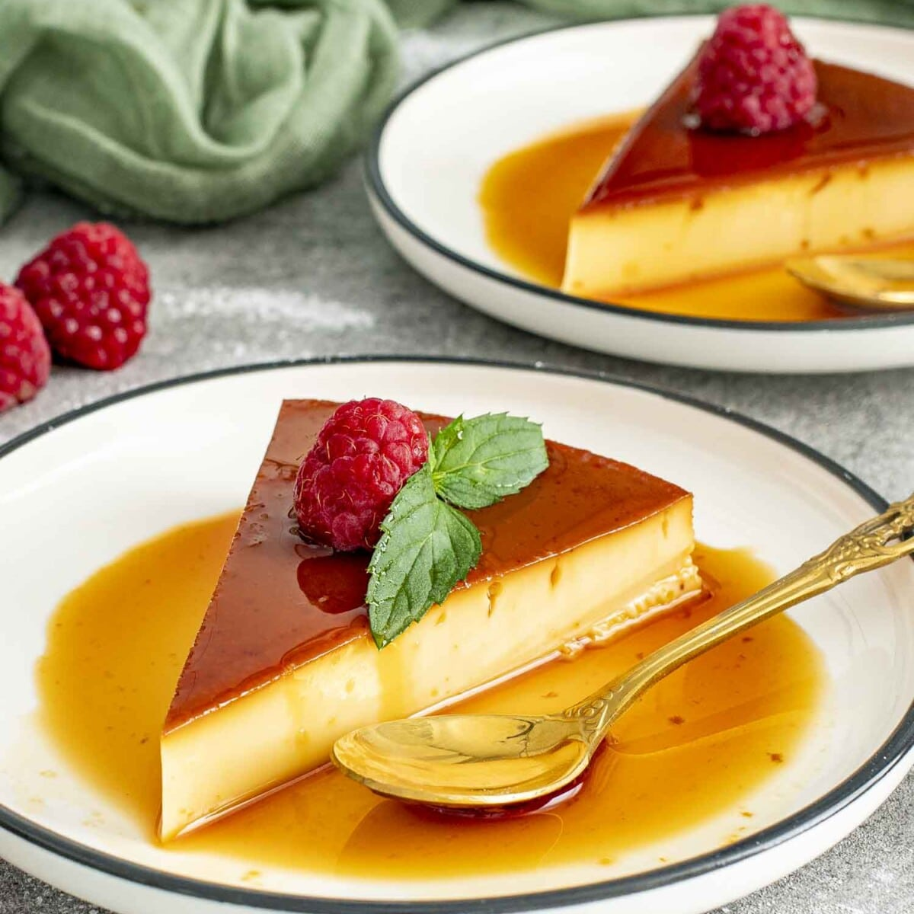

Flan
Description

Flan is a silky, caramel-topped custard dessert popular across Latin America and Spain. It’s known for its rich, creamy texture and glossy layer
of golden caramel.
Ingredients
- 3/4 granulated sugar
- 4 large eggs
- 1 - 14 ounce sweetened condensed milk can
- 1 1/4 cup whole milk
- 1 tablespoon vanilla extract
Instructions
- Preheat oven to 350F
-
On medium heat pour sugar onto saucepan. Stir the sugar until it begins to brown and clump together. Keep stirring until caramel consistency
is reached. Then remove.
-
Pour caraml into a 7-inch round pan. Tilt pan around to achieve even coating. If caramel hardens too quickly, carefully reheat pan by placing
it on stovetop
- Once even coat is achieved, place caramel lined pan to the side
-
In a large bowl, mix your eggs, condensed milk, whole milk and vanilla extract. Whisk until everything is combined. Do not overwhisk - it will
cause airbubbles.
- Pour wet mixture into caramel pan, and then cover with lid or aluminum foil
- Place caramel pan into a deep baking dish. Pour water into baking dish until water reaches halfway up outside the caramel pan
- Place baking dish containing the flan pan into the oven for an hour and 15 minutes
-
Remove dish from oven. Lift flan pan out of water bath. Remove flan cover and let it rest at room temperature. It may look jiggly but that is
okay; it will continue to cook
- Once cooled, cover again with aluminum and leave in fridge for 4 hours or overnight
- To remove flan from pan, slide knife along the side to loosen it up. Place plate on top of pan and flip carefully. Enjoy!
Home